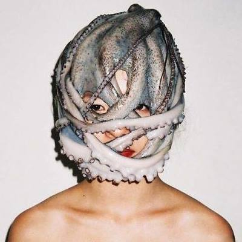

About Me
My name is Samantha Capps. I live in Chapel Hill, North Carolina, and am currently enrolled in the Coding Bootcamp at UNC-Chapel Hill.
My background is in writing, mathematics, and library science. I have a bachelors in creative writing and math from Warren Wilson College in Asheville, NC. I attended the Master of Information Studies program at McGill University in Montreal, Quebec, Canada, but elected not to finish the degree. Still, from all of my education, I have learned valuable talents like research skills, logical problem solving, effective exposition, how to navigate information on the Internet and in databases, how to communicate with customers, and a general strong work ethic.
Connect With Me